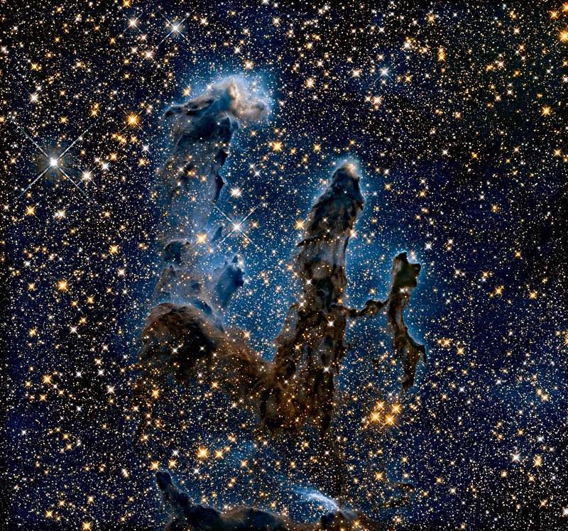
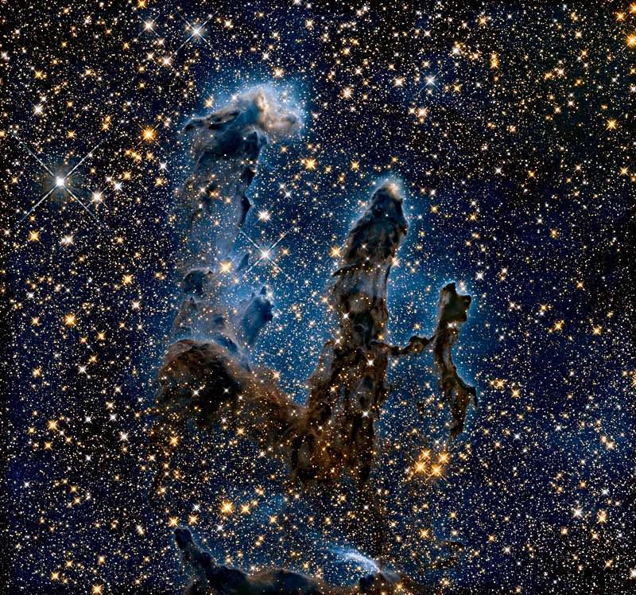

HUBBLE
 

Launch: April 24th, 1990
Mission Duration: Ongoing
Retired: N/A
Deployed on April 25, 1990, from Space Shuttle Discovery during mission STS-31, the Hubble Space Telescope revolutionized astronomy. Orbiting above Earth’s atmosphere, Hubble captured crystal-clear images of distant galaxies, nebulae, and other celestial phenomena, free from atmospheric distortion. It confirmed the universe’s accelerating expansion, provided precise measurements of its age, and delivered iconic deep field images. Hubble remains operational today, over 30 years later, and continues to deliver critical data alongside newer observatories.